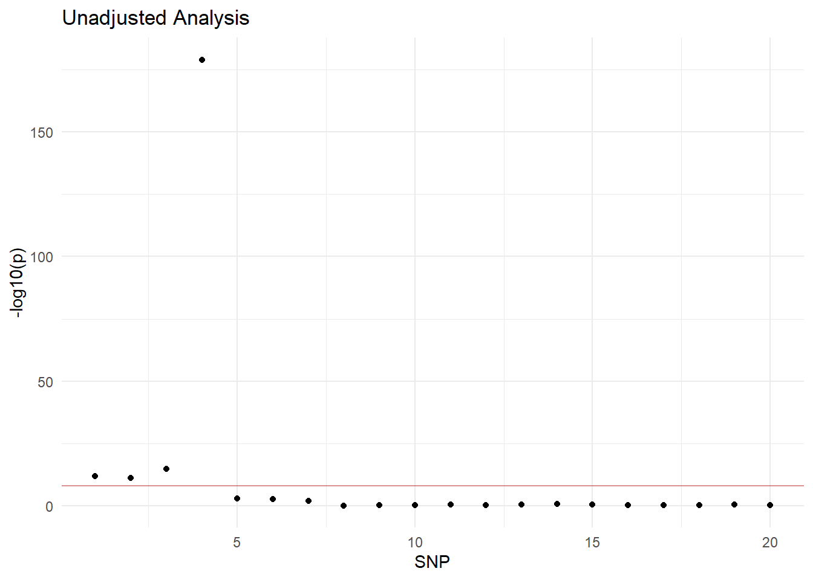
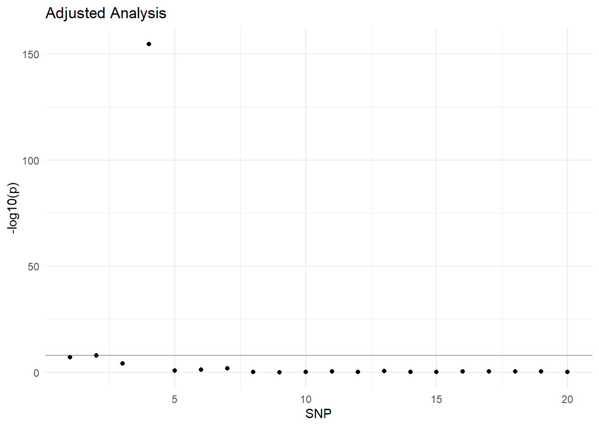

2 Genetic Ancestry
What is ancestry, and what can genetic data tell us about it? There are several ways that one can think about genetic ancestry. In these chapters, we will consider genetic ancestry to loosely mean the genetic relationship between you and your ancestors.
An important idea to remember throughout this chapter is genetic similarity. If you have ever taken a genetic test through a company like 23andMe or Ancestry.com you are most likely familiar with this concept. When you take one of these tests by sending in some of your DNA, these companies are reporting back to you how similar your DNA is compared to different populations.
The concept of different populations comes up a lot in these contexts. As with all scientific research, there are some ethical issues surrounding how researchers classify populations in genetic studies. We will get into this next.
2.1 Describing Human Populations
When a researcher is working with genetic data, they will likely use some sort of population descriptor to attempt to capture complex differences in human genetics.
When you look at the results of your personal DNA test, you will likely see your ancestry broken down into smaller percentages of regions or peoples that contribute to 100% you. The way these regions are described brings with it some questions you may have never thought of before:
How are regions defined? Are political borders used in every case?
What is the genetic “line” between being reported as native to one area versus another geography close by? How specific can this get?
So, what are the recommended ways to describe human populations?
To start, you should never use race as a descriptor of genetic variation. Race is a concept created by white people in the past to other different peoples. There is no reason to use these arbitrary descriptors in a genetic study.
Different populations do not exist as discrete genetic clusters, but instead as a continuum across space and time. Assigning constricting labels to different populations can be harmful, especially if you are not conscious of potential impacts of your chosen terminology.
- Think about if there are different ways to classify populations related environmental factors rather than the people themselves. Genetic similarity, geography, and indigeneity are some top choices provided by the National Academies of Sciences.
Explaining the choices for using specific terminology to describe human populations.
- Being aware of cultures and incorporating their thoughts into your choices. Maybe you also need multiple labels, but it is important to remain consistent.
Do your research on what the current recommendations are for the type of genetic study you are performing and what different institutions and organizations encourage. These can change with time, so make sure to check with any and every study.
2.1.1 Population Admixture
As our world has become so interconnected between geographies and people’s from long ago to the present, many of us have DNA inherited from multiple populations. The general term for this is population admixture.
There is not really any population that is completely homogeneous. Populations in the Americas tend to be more admixed due to history of world discovery, slavery, and immigration as compared to other continents. In the United States especially, there are many more people with ancestors all over the world. That is not to say the Americas are the only place with admixed populations. Those with European ancestry, for example, can be more similar to each other than to individuals with ancestry from a different geographical/continental area, but there are still admixed populations here when we focus our scale to Europe only.
When doing genetic research, you should keep this concept in mind as you collect, process, and report your data. Think about how ancestry is related to your study and which ones you are including to help guide your naming conventions and disclaimers on population differences. One way to go about this is to think of social classifications of population and trying to break those down. What would that look like?
Ancestry in Genetics Studies
When we conduct a genetic study, we want to be aware of the ancestry of our samples. Things like genetic similarity and continental geography come to mind. It is important to correct for these population structures built into our data so we can have the most accurate results.
One method we can use to account for population structures in genetic data is by performing Principal Component Analysis. We can also use PCA on admixed ancestry. We will go into what PCA is and how to apply it to genetic data next.
2.2 Principal Component Analysis
If you have taken a class in linear algebra or machine learning, you may be familiar with the method of Principal Component Analysis (PCA). We use PCA as a technique to reduce the dimensionality of correlated variables while keeping as much variation as possible. We will be left with principal components (PC’s) as weighted combinations of these variables that explain the most variation in our data. Essentially, instead of having thousands of SNPs representing genetic variation, this method will represent genetic variation in fewer dimensions made up of the original data.
The first few PC’s explain the most variation in our data. Here is an example of what the PC’s we create from this method could look like:
\[\begin{align} \text{PC}1 &= a{11}x_1 + a_{12}x_2 + \dots + a_{1p}x_p \\ \text{PC}2 &= a{21}x_1 + a_{22}x_2 + \dots + a_{2p}x_p \\ &\vdots \\ \text{PC}n &= a{n1}x_1 + a_{n2}x_2 + \dots + a_{np}x_p \end{align}\]
where
\[\begin{align} & x_1, x_2, \dots, x_p \text{ are the original SNPs and} \\ & a_{ij} \text{ are the weights of each SNP towards a PC} \end{align}\]
The \(a_n\) values represent the weights of each SNP that goes into each principal component. We call these the loadings. They are essentially telling you how important each SNP is to the PC.
The \(a_N\) values combined with the \(x_1, x2, \dots\) values create our PCs, and these values we call the scores.
2.2.1 Genetic Data PCA
We can use PCA with genetic data in order to correct for stratification from things like population (which is what we will be looking at with an example below). Say there is some set of SNPs that have very different MAF between populations. These features are most likely correlated to each other and stratify the data by representing the difference between populations and will contribute most to the top PCs.
Let’s simulate some genetic data to run PCA on and break down some of the concepts briefly mentioned above. We will use some similar simulation code to the last chapter on GWAS.
Simulating data
# simulate a genetic variant with freq. depending on which population the person belongs to
sim_data_onevar <- function(pop, maf){
snp <- rbinom(n = length(pop), size = 2, p = maf[pop])
return(snp)
}
# create dataset with two types of SNPs
popidx <- rep(1:2, each = 400)
maf1 <- c(0, 0.8) # type 1: non-existent in pop 1, frequent in pop2 (different btwn pops)
maf2 <- c(0.5, 0.3) # type 2: higher frequency in pop 1 and lower in pop 2 (different btwn pops)
maf3 <- c(0.1, 0.11) # type 3: similar freq in pops 1 and 2
set.seed(494)
# arguments include number of snps to create, and the population and maf for each pop we created before
snps1 <- replicate(3, sim_data_onevar(pop = popidx, maf = maf1))
snps2 <- replicate(4, sim_data_onevar(pop = popidx, maf = maf2))
snps3 <- replicate(13, sim_data_onevar(pop = popidx, maf = maf3))
pcadata <- cbind(popidx, snps1, snps2, snps3) %>%
as.data.frame()
names(pcadata) <- c('population', paste0('SNP', 1:(ncol(pcadata)-1)))
# simulating a trait on snp 4 in our data
n <- 800 # number of individuals
trait <- 2 * pcadata[,'SNP4'] + rnorm(n, 0, 1) # y = 2 * x + e
trait <- as.data.frame(trait)
# joining snps and trait
pcadata <- as.data.frame(cbind(trait, pcadata))Calculating the MAF for each SNP in our data summarized by population. We create a function that will add the minor alleles and divide by 2x the number of people we have in the data.
get_MAF <- function(snp){
sum(snp)/(2*length(snp))
}
# get observed allele frequency for each population
pcadata %>%
group_by(population) %>%
summarize_all(get_MAF)## # A tibble: 2 × 22
## population trait SNP1 SNP2 SNP3 SNP4 SNP5 SNP6 SNP7 SNP8 SNP9
## <int> <dbl> <dbl> <dbl> <dbl> <dbl> <dbl> <dbl> <dbl> <dbl> <dbl>
## 1 1 1.03 0 0 0 0.515 0.494 0.536 0.52 0.0875 0.0925
## 2 2 0.560 0.811 0.785 0.821 0.286 0.281 0.29 0.3 0.102 0.102
## # ℹ 11 more variables: SNP10 <dbl>, SNP11 <dbl>, SNP12 <dbl>, SNP13 <dbl>,
## # SNP14 <dbl>, SNP15 <dbl>, SNP16 <dbl>, SNP17 <dbl>, SNP18 <dbl>,
## # SNP19 <dbl>, SNP20 <dbl>In order to run PCA, we need to have only the genotype information from our data. This means removing the population and trait variables. Then we will perform PCA on our remaining data.
genotype <- pcadata %>%
select(-population, -trait)
# performing pca
pca_out <- prcomp(genotype, center = TRUE, scale = TRUE)
# storing loadings and scores from pca
pca_loadings <- pca_out$rotation
pca_scores <- pca_out$x
Visualizing PCA
Let’s take a look at what the components of our PCs look like.
Score Plot
pca_scores %>%
as.data.frame() %>% # convert pca_scores into a data frame for plotting
mutate(population = as.factor(pcadata$population)) %>% # add the population labels
ggplot(aes(x = PC1, y = PC2, color = population)) + # then plot
geom_point() +
theme_minimal()+
scale_color_brewer(palette = 'Dark2')The scores above represent the new values for the individuals in our study along the PC1 and PC2 axes. In our plot, we colored the points by population. Before we performed PCA, we took out our population variable, yet this graph shows how our data is still separated into two populations through this method.
We can also use a kind of visualization called parallel coordinates plot. This plot is another way to view how the PCs capture our populations by showing the scores for all PCs at one time. As we learned from our score plot, we see PC1 and PC2 capture population membership, while later PCs do not.
# parallel coordinates plot
pca_scores %>%
as.data.frame() %>%
mutate(population = as.factor(pcadata$population)) %>%
ggparcoord(columns = 1:20, groupColumn = 'population', alpha = 0.2) +
theme_minimal() +
scale_color_brewer(palette = 'Dark2')Remembering from before, loadings show us how much each SNP contributes to a PC. We can view this PC by PC. We will look at plots for for PC1 to PC4.
library(reshape2)
pca_loadings[, 1:4] %>%
melt() %>%
ggplot(aes(x = Var1, y = value, fill = Var1)) +
geom_bar(stat = "identity") +
facet_wrap(~ Var2) +
labs(y = "loadings", x = "original features", fill = "original features") +
theme_minimal() +
theme(axis.text.x=element_blank(), axis.ticks.x = element_blank())Scree plot
When we explained what PCA is, we mentioned this idea that we are performing dimension reduction to be left with components that explain the most variation in our data. We also have a way of visualizing the proportion of variance explained by each PC. The plot we will make is called a scree plot.
# extract variance of each PC
pca_var <- (pca_out$sdev)^2
# calculate proportion of variance explained
total_var <- sum(pca_var)
pve <- pca_var/total_var# creating scree plot
pve %>%
as.data.frame() %>%
mutate(index = seq_len(length(pca_var))) %>%
ggplot(aes(x = index, y = pve)) +
geom_point() +
geom_line() +
labs(x = 'Principal Component', y = 'Percent of Variance Explained') +
theme_minimal()In our plot, we can see that our first PC has the highest proportion of variation compared to the rest. PC1 explains around 16% of the variance and then there is a drop for the rest of the PCs. We mentioned before that our method will have the first PCs explain the most variance, and this holds true for the PCA we ran on our simulated genetic data as well.
Another thing we can understand from a scree plot is how many PCs are sufficient to capture population structure. From our plot, we can see our first PC captures a lot more variance as compared to PC2-PC20. The drop off in the plot lets us know that PC1 is sufficient and we would not need to adjust for others to correct our analysis for population structure.
2.2.2 GWAS and PCA
In the last chapter, we did not run GWAS on our simulated chapter. With this chapter, we will get to see what this looks like in practice.
Before adjusting for PCs
With this first GWAS example, we provide code that looks like just a normal GWAS where we use marginal regression for each of our 20 SNPs on the trait we simulated. What we would want to see is that the most significant SNP in predicting our trait is the one we simulated the trait on (SNP4).
# empty vector to store p-values
pvals <- c()
# loop through the 20 SNPs
for(i in 1:20){
dat <- pcadata %>% select(trait, paste0('SNP',i)) # pull out just the trait and SNP of interest
mod <- lm(trait ~ ., data = dat) # regress trait on everything else (.), which is just SNP i in this case
pvals[i] <- summary(mod)$coef[2,4] # pull out the p-value for the slope
}
# plot -log10 pvalues
data.frame(p = pvals, SNP = 1:20) %>%
ggplot(aes(y = -log10(p), x = SNP)) +
geom_point() +
theme_minimal() +
geom_hline(yintercept=8, color = "firebrick", alpha = 0.5)+
ggtitle('Unadjusted Analysis')
We see with our plot that our SNP4 does indeed have the smallest p-value. But we also see that our first three SNPs seem significant as well at around 15 on the \(-log10\) scale. The horizontal line on the graph represents the agreed upon “typical” level of significance for a GWAS study.
Note: the \(-log10(p)\) notation means that we are transforming the visual of our p-value (p) to put more emphasis on those with the lowest values (log scale). You may notice that it is \(-log\) which means that on our graph we are looking for the highest value instead of the lowest value for which SNP is most significant. (think of it like \((p)^{-5}\) now looks more like \((p)^5\)).
Adjusting for PCs
# empty vector to store p-values
pvals <- c()
# loop through the 15 SNPs
for(i in 1:20){
dat <- pcadata %>%
select(trait, paste0('SNP',i)) %>% # pull out just the trait and SNP of interest
mutate(PC1 = pca_scores[,1]) # add the scores for PC1
mod <- lm(trait ~ ., data = dat) # regress trait on everything else (.), which is SNP i and PC1
pvals[i] <- summary(mod)$coef[2,4] # pull out the p-value for the slope
}
# plot -log10 pvalues
data.frame(p = pvals, SNP = 1:20) %>%
ggplot(aes(y = -log10(p), x = SNP)) +
geom_point() +
geom_hline(yintercept=8, color = "firebrick", alpha = 0.5)+
theme_minimal() +
ggtitle('Adjusted Analysis')
After adjusting for our first PC, which explains much of the difference between the two populations, the significance of our first three SNPs goes down. Looking at where the p-values are compared to our reference line, they are below what we would consider significant.
What could be the reason for the difference between the two models? We will talk about it next.
2.3 Confounding Variables
A term you may have come across in statistics or statistics related courses is the idea of confounding. In some instances, all you may know about a confounding variable is that you should adjust for it. But what does it mean to adjust for a confounding variable and how do we really know if a variable is confounding or not?
Nearly all genetics studies are observational studies. This means that the researcher simply collects genetic data or uses existing data and views the trends present. Mainly we use observational studies because there are plenty of ethical concerns that come with experimental human genetic studies. Just like you need to be sure to account for different variables in an experiment that can affect your collection and results, you also need to be aware of variables that interact with observational studies.
A term you may be less familiar is Directed Acyclic Graph (DAG). These are graphs where the edges are directed, or have arrows explaining the direction of how variables are related or “cause” each other. So, if we think of a basic linear model, we can draw a DAG that shows how we think our variables in the model are related.
INSERT GRAPH DRAWING WITH ONLY genotype and trait
There are three criteria for confounding to think about when considering variables to add to your model.
Confounding variable \(Z\) must be associated (“cause”) our predictor \(X\).
Confounding variable \(Z\) must be associated (“cause”) our outcome \(Y\).
Confounding variable \(Z\) cannot be on the causal pathway between predictor \(X\) and outcome \(Y\).
DRAWING OF ALL THREE CRITERIA WITH genotype, trait, ancestry
The reason we are talking about confounding at all is because of the population variable. We adjusted for populationwith our PCA method. It fits all three criteria for the SNPs that we simulated with different MAF between populations
2.3.1 Omitted Variable Bias
Another set of terms you may or may not be familiar with are bias and variance. Bias refers to how far away we are from true value while variance refers to how much our results differ from attempt to attempt.
INSERT TYPICAL TARGET DRAWING
When we run ordinary linear regression (OLS), we are finding the \(\beta\) coefficients for each variable in our model. So, this means for OLS, our estimator is \(\beta\). An estimator is unbiased if its expected value is equal its true value For OLS this looks like:
\[ E[\hat\beta] = \beta \]
Lets prove that the OLS estimator is unbiased.
We want to fit the linear regression model
\[ E[y|x] = X\beta \]
We can derive the estimator for \(\beta\) with some linear algebra (check here for how we get this)
\[ \hat\beta = (X^TX)^{-1}X^Ty \]
The last bit of information we need to start working on this proof that \(E[\hat\beta]= \beta\) (OLS estimator is unbiased) is what \(y\) equals. We get this from the linear model we are building where \(\hat y = X\hat\beta\).
\[ y = X\beta + \epsilon\\ \text{where, } E[\epsilon]=0 \]
Finally, here is what this proof looks like:
\[\begin{align} E[\hat\beta] &= E[(X^TX)^{-1}X^Ty]\\ & = (X^TX)^{-1}X^T\space E[y]\\ & = (X^TX)^{-1}X^T\space E[X\beta + \epsilon]\\ & = (X^TX)^{-1}X^TX\space \beta \space + \space E[\epsilon]\\ & =\beta\\ E[\hat\beta]& = \beta \end{align}\]
\[\begin{align} E[\hat\beta] &= E[(X^TX)^{-1}X^Ty]\\ & = (X^TX)^{-1}X^T\space E[y]\\ & = (X^TX)^{-1}X^T\space E[X\beta + Z\gamma + \epsilon]\\ & = (X^TX)^{-1}X^T\space (E[X\beta] + E[Z\gamma] + E[\epsilon])\\ & = (X^TX)^{-1}X^T\space (X\beta + Z\gamma + 0)\\ & = ((X^TX)^{-1}X^T X\beta) + ((X^TX)^{-1}X^TZ\gamma)\\ & = \beta + (X^TX)^{-1}X^TZ\gamma \end{align}\]